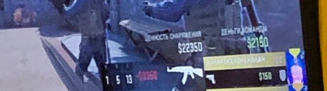

Саня Губер
Топ Геймер, программист, сын Джарахова
Великий основатель чита на самп Rampage
Немного о Сане

Саня потрясающий человек. Забавно, но я не знал этого, пока не узнал, что его среднее
К/Д = 1/13.
Наверное я воспринимал его счёт как должное или что-то в этом роде.Сейчас я так не думаю. С тех пор, как я понял, что Саня может в соло сливать игру и без нас.
Все изменилось, как я понял что в ближайшее время Саня может попасть в высшую лигу по
CS:GO. С тех пор, как я понял, что однажды в ближайшем будущем его может
не быть рядом и он будет где то на турнире без нас, стало сводить меня с ума
Саня учился в церковно приходской школе, и его IQ был всегда не больше обезьянего. Тем неменее он смог её закончить. О Сане можно говорить долго, но какой в этом смысл?